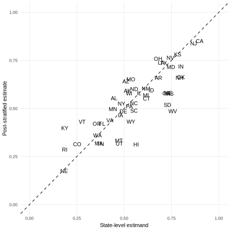
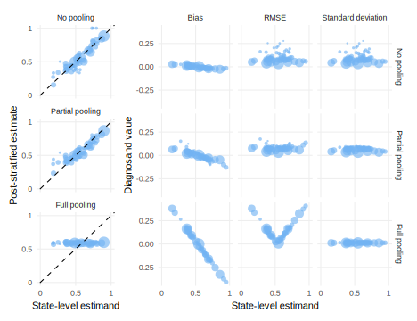

library(rdddr) # for helper functions
library(lme4)
#> Loading required package: Matrix
#>
#> Attaching package: 'Matrix'
#> The following objects are masked from 'package:tidyr':
#>
#> expand, pack, unpack
states <-
as_tibble(state.x77) |>
transmute(
state = rownames(state.x77),
prop_of_US = Population / sum(Population),
# results in exactly 2,000 due to rounding
state_n = round(prop_of_US * 1998.6),
prob_HS = `HS Grad` / 100,
state_shock = rnorm(n = n(), sd = 0.5),
state_mean = prob_HS * pnorm(0.2 + state_shock) + (1 - prob_HS) * pnorm(state_shock)
)
declaration_15.4 <-
declare_model(
data = states[rep(1:50, states$state_n), ],
HS = rbinom(n = N, size = 1, prob = prob_HS),
PS_weight =
case_when(HS == 0 ~ (1 - prob_HS),
HS == 1 ~ prob_HS),
individual_shock = rnorm(n = N, sd = 0.5),
policy_support =
rbinom(N, 1, prob = pnorm(0.2 * HS + individual_shock + state_shock))
) +
declare_inquiry(
handler = function(data) {
states |> transmute(
state,
inquiry = "mean_policy_support",
estimand = state_mean
)
}
) +
declare_estimator(handler = label_estimator(function(data) {
model_fit <- glmer(
formula = policy_support ~ HS + (1 | state),
data = data,
family = binomial(link = "logit")
)
post_stratification_helper(model_fit, data = data, group = state, weights = PS_weight)
}),
label = "Partial pooling",
inquiry = "mean_policy_support")Multi-level regression and poststratification
We declare a design in which researchers reweight the responses of different units in a sample in order to better estimate a population level quantity. Reweighting depends on how much units are thought to “represent” other nonsampled units and requires making decisions about how much units of different types should be pooled together. Design performance of a partially pooled model is compared against designs that involve no pooling and full pooling.
Multi-level regression and poststratification (MRP) is a technique used primarily for “small area estimation.” In the prototypical setting, we conduct a nationally-representative survey of public opinion, but our goal is to generate estimates of the average level of public opinion for many subnational units. In the United States context, these “small area” units are often the 50 states. The main problem is that in a national poll of 2,000 Americans, we might only have 4 respondents from small states like Alaska, Wyoming, or Vermont, but more than 100 from large states like California, New York, or Texas. Accordingly, it is harder to estimate opinion in small states than in large states. The key insight of an MRP design is that we can “borrow strength” across states and kinds of people in order to improve state level estimates.
In an MRP design, the answer strategy includes two steps: a multi-level regression step and a poststratification step. The regression model generates estimates of the average opinion for classes of people within each state. The precise flavor of regression model can vary from application to application. In the simple example below, we use a generalized linear mixed effects model with an individual-level covariate and random effects by state, but regression models of substantial complexity are sometimes used to model important nuances in how opinions covary with individual and state-level characteristics (see, e.g., Bisbee (2019)).
The regression model generates estimates of the average opinion for classes of people within each state. The post-stratification step reweights these estimates to known proportions of each class of person within each state. The knowledge of these proportions has to come from outside the survey. The US census is the usual source of these population proportions in the American context, though any reliable source of this information is suitable.
In Declaration @ref(def:declaration-15-4), we begin with a dataset of the fifty states that describes what fraction of people in each state has graduated from high school. This code block also establishes the true state means that will form our inquiry. In the model, we draw a nationally-representative sample of size 2,000, respecting the fraction of people within each state with a high school degree. The post-stratification weights are built from the that fraction as well. The binary public opinion variable policy_support is a function of the high school covariate, an individual-level shock, and a state-level shock. The inquiry is the mean policy support at the state level. The tricky part of this design is the two-step answer strategy. The first step is handled by the multilevel regression function glmer. The second step is handled by the post_stratification_helper function (available in the rdddr companion package) that obtains predictions from the model, then reweights them according to the post-stratification weights.
Multilevel regression and poststratification design
Figure @ref(fig:figure-15-4) shows one draw from this design, plotting the MRP estimates against the true level of opinion.

Redesign over answer strategies
The strengths of the MRP design are best appreciated by contrasting MRP’s partial pooling approach to two alternatives: no pooling and full pooling. Under no pooling, we estimate each state mean separately with a national adjustment for the individual-level high school covariate. Under full pooling, we only adjust for high school and ignore state information altogether. Here we add both estimators to the design and diagnose.
Redesign over answer strategies
declaration_15.5 <-
declaration_15.4 +
declare_estimator(
handler = label_estimator(function(data) {
model_fit <- lm_robust(
formula = policy_support ~ HS + state,
data = data
)
post_stratification_helper(model_fit, data = data, group = state, weights = PS_weight)
}),
label = "No pooling",
inquiry = "mean_policy_support") +
declare_estimator(
handler = label_estimator(function(data) {
model_fit <- lm_robust(
formula = policy_support ~ HS,
data = data
)
post_stratification_helper(model_fit, data = data, group = state, weights = PS_weight)
}),
label = "Full pooling",
inquiry = "mean_policy_support")Diagnosing over answer strategies
diagnosis_15.4 <- diagnose_design(declaration_15.5)Figure @ref(fig:figure-15-5) compares the three estimators. The first column of facets shows one draw of the estimates against the estimands. The main thing to notice here is that the full pooling estimate is more or less a flat line – regardless of the estimand, the estimates are just above 50%. Relative to partial pooling, the no pooling estimates are further spread around the 45 degree line, with small states bouncing around the most.
On the right side of the figure, we see the bias, RMSE, and standard deviation diagnosands for each inquiry under all three answer strategies. Under no pooling, bias is very low, but the RMSE and standard deviation for small states is very high. Under full pooling, the standard deviation is very low, but bias is very positive for states with low support and very negative for states with high support. The resulting RMSE has a funny “V” shape – we only do well for states that happen to have opinion that is very close to the national average.
Partial pooling represents a Goldilocks compromise between full and no pooling. Yes, we have some positive bias for low-opinion states and negative bias for high opinion states, but variance has been brought under control. As a result, the RMSE for both small and large states is small.

Design examples
Lax and Phillips (2009) apply multilevel regression and poststratification to 41 national polls conducted between 1999 and 2008 to generate state-level estimates of gay rights attitudes in the US.
Tausanovitch and Warshaw (2013) apply multilevel regression and poststratification to large polls of Americans’ policy preferences to generate estimates of policy opinions at the Congressional district, state legislative district, and municipality levels.